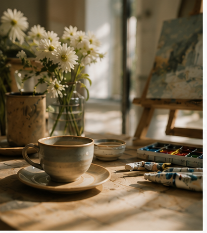
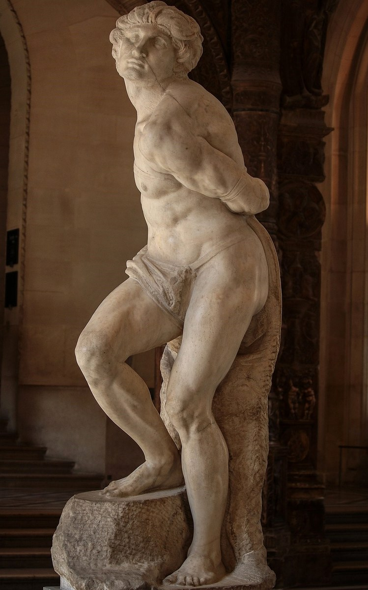

S2026-001
Casino Zhou
KART Artist
用绘画保存注意力，也用身体经验和跨文化生活训练观看。
这里同时收录 KART 艺术家档案与导师课会员成长卷宗。KART 保存的，是作品、项目与生活经验背后那条正在形成的成长线索。
KART 艺术客厅每个月只保留一个轻命题：让绘画入口、生活处境与长期成长保持同一方向。

KART Museum 以三层馆藏保存人的成长：如何生活，留下什么，以及如何在长期观看中改变。
记录一个人如何生活：时间、空间、关系、身体经验与日常节奏如何形成她的观看方式。
保存一个人留下了什么：作品、项目、视觉实验，以及那些能证明成长曾经发生的痕迹。
观察一个人如何成长：观看能力、判断能力、表达能力与文化理解如何被慢慢建立。
每个月回应一种生命处境：重新开始、慢下来、看见颜色、建立关系、年度回望。
艺术不是终点，而是一种重新解释生活、建立价值感，并让生命经验被看见的方法。
在一年结束时回看作品与生活变化，让成长被看见、被命名，也被克制而温柔地保存。
先保存已经发生的现场：写生行走、空间活动与文化记忆，构成 KART Museum 中可以继续延展的项目档案。
KART 项目以“行走、现场、教育、档案”四类展开。后续写生旅行、展览项目与主题研究，都可以在这里继续添加。
全球艺术史与视觉思维计划。不是艺术史补习，也不是 AP Art History 培训，而是 KART Museum 面向长期观看、文化理解与审美判断的教育策展项目。

艺术史是理解图像、文明、权力、信仰与价值的路径。
视觉分析让学生从“我喜欢”进入“我如何判断”。
最终目标不是记住更多作品，而是在图像泛滥的 AI 时代建立人的判断力。
同一套底层框架，可以根据年龄、经验与学习目标，拆分为不同深度的观看路径。
视觉阅读基础。学会观看：什么是图像，人为什么创造艺术，图像如何制造权力、信仰和身份。
全球艺术史研讨。结合 AP Art History 的能力框架，但采用主题式结构，而不是机械章节训练。
AP 是出口，不是产品本身。考试支持建立在长期视觉判断与文化理解之后。
一年只做一件事：让学生逐渐从图像阅读，进入全球文化理解，再进入自己的判断立场。
图像为什么比文字更早进入人类经验。
图像如何服务信仰、秩序与权力。
肖像、身体与身份如何被塑造。
建筑如何组织敬畏与共同体。
艺术如何随着帝国、贸易、迁徙流动。
博物馆如何决定我们看见什么。
人如何重新成为图像中心。
现代艺术为什么打破“像不像”。
技术如何改变真实感。
当代艺术如何回应全球化处境。
价格、机构、稀缺性与价值判断。
形成年度视觉思维档案。
中文负责深度理解，英文负责国际材料入口。语言不是装饰，而是进入世界材料的方法。
阅读博物馆文本、AP 资料、艺术术语与作品说明。
处理历史逻辑、文化背景、哲学问题与价值判断。
完成短评、比较、作品阐释与面试表达。
KART 项目既可以从学生学习进入，也可以从成人讨论、家庭共同观看与长期档案整理进入。
建立全球艺术史框架、图像阅读能力与跨文化理解。
进入学术表达、比较写作、作品阐释与国际课程语境。
成年人通过持续讨论、展览路径与主题分享建立共同语言。
把阅读、旅行、展览和作品材料整理为可持续更新的家庭文化记忆。
一座持续生长的数字馆藏，也是一条从观看、记录到文化理解的长期路径。
KART Museum 围绕全球艺术史、人物成长档案与综合项目，保存观看如何发生，也保存人如何在长期实践中改变。
网站呈现人物馆藏、作品与成长卷宗、写生行走、空间项目及艺术史研究。微信公众号「开美术馆」是 KART 的持续内容入口，发布艺术史、观看方法、项目记录与活动更新。